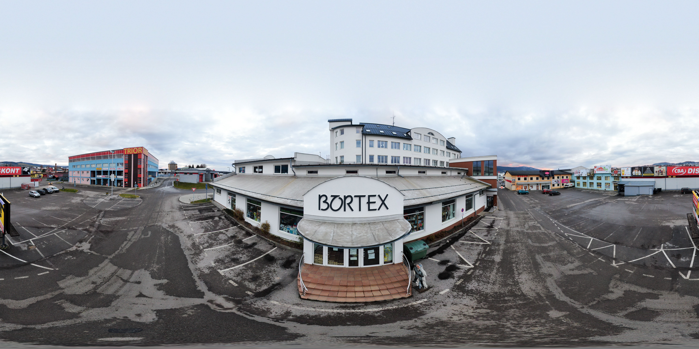

Arraste para olhar ao redor. Toque nos pontos dourados para visitar outro local.
Experiência histórica imersiva
Explore a cidade através do tempo.

Arraste para olhar ao redor. Toque nos pontos dourados para visitar outro local.